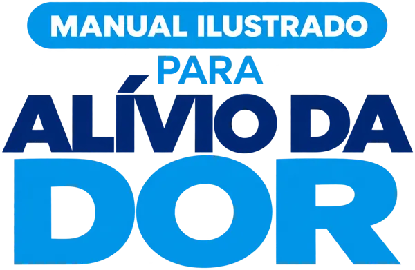

Compra aprovadaParabéns! Falta só uma etapa
Seu Manual Ilustrado para Alívio da Dor com Massagem já está garantido. Agora eu quero te conhecer.
Me conta: qual dor você quer aliviar primeiro?
Em 2 minutinhos você me conta quem é você e o que te trouxe até aqui, seja para cuidar de quem você ama, aliviar suas próprias tensões ou melhorar seus atendimentos.
Assim que você terminar, o download do seu Manual abre automaticamente. ✨
Leva menos de 2 minutos
“Com as suas respostas eu preparo os próximos conteúdos do jeitinho que você precisa.”
- Você me ajuda a criar conteúdos pensados para a sua realidade
- Eu fico sabendo quais dores mais incomodam quem está comigo
- No final, o seu Manual já abre para download
Prefere baixar agora? Baixar direto · Seu Manual também foi enviado para o seu e-mail e está na sua área de membros da Hotmart.
As aulas em vídeo são liberadas na plataforma 7 dias após a sua compra.
Precisa de ajuda? Fale com o TopSuporte no WhatsApp.